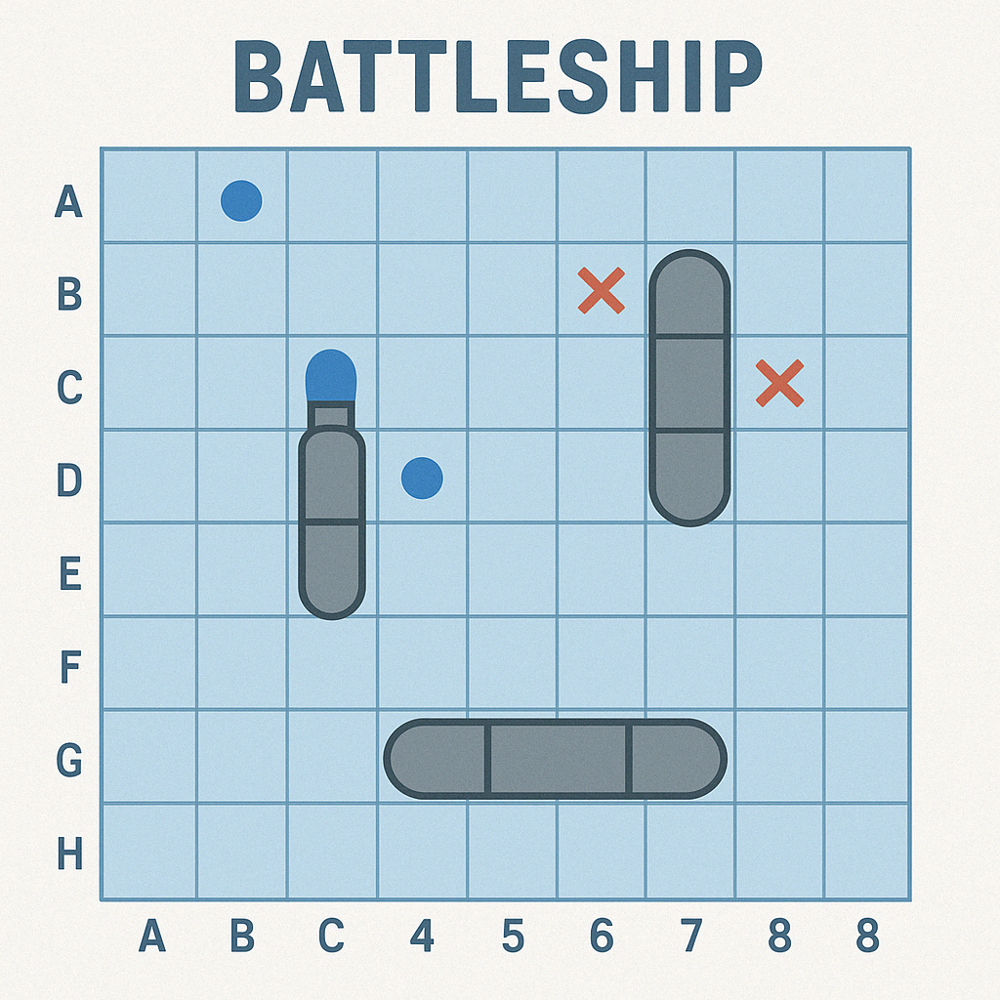
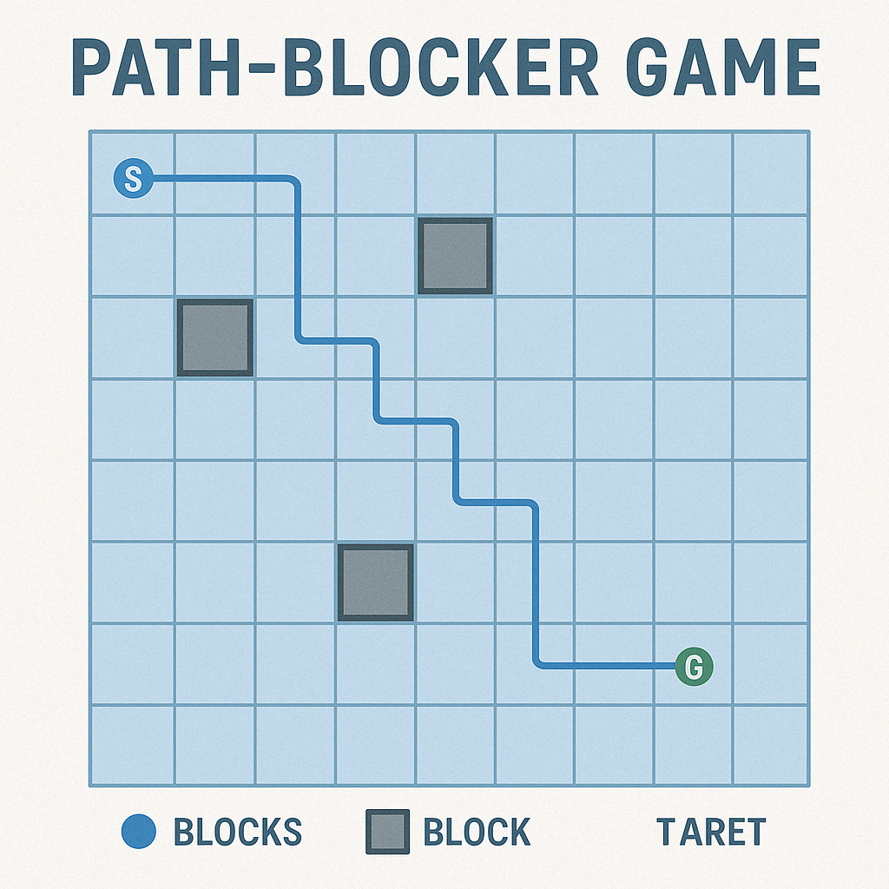
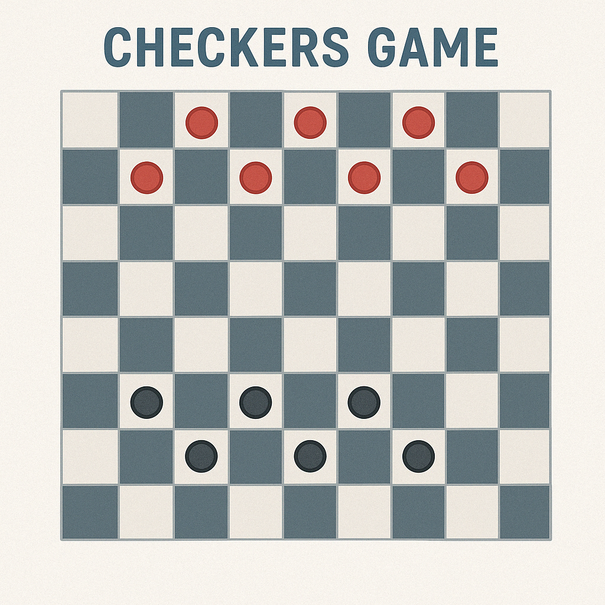
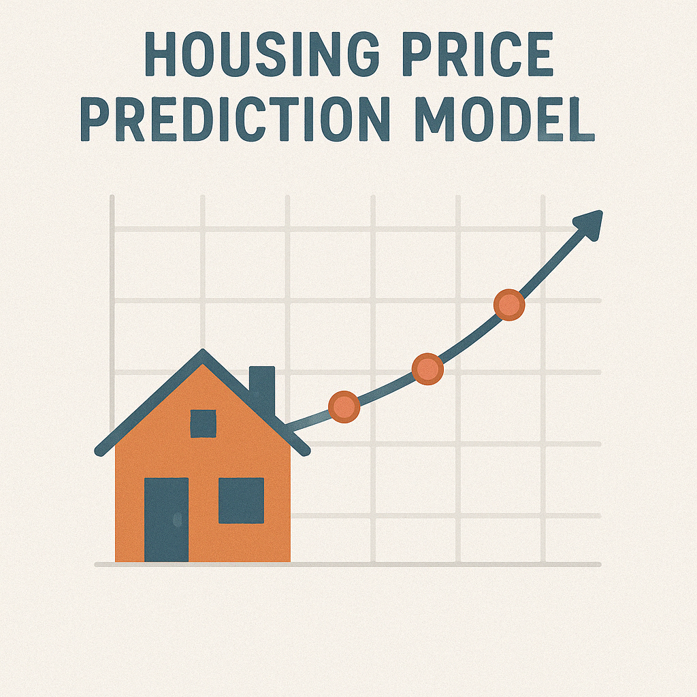
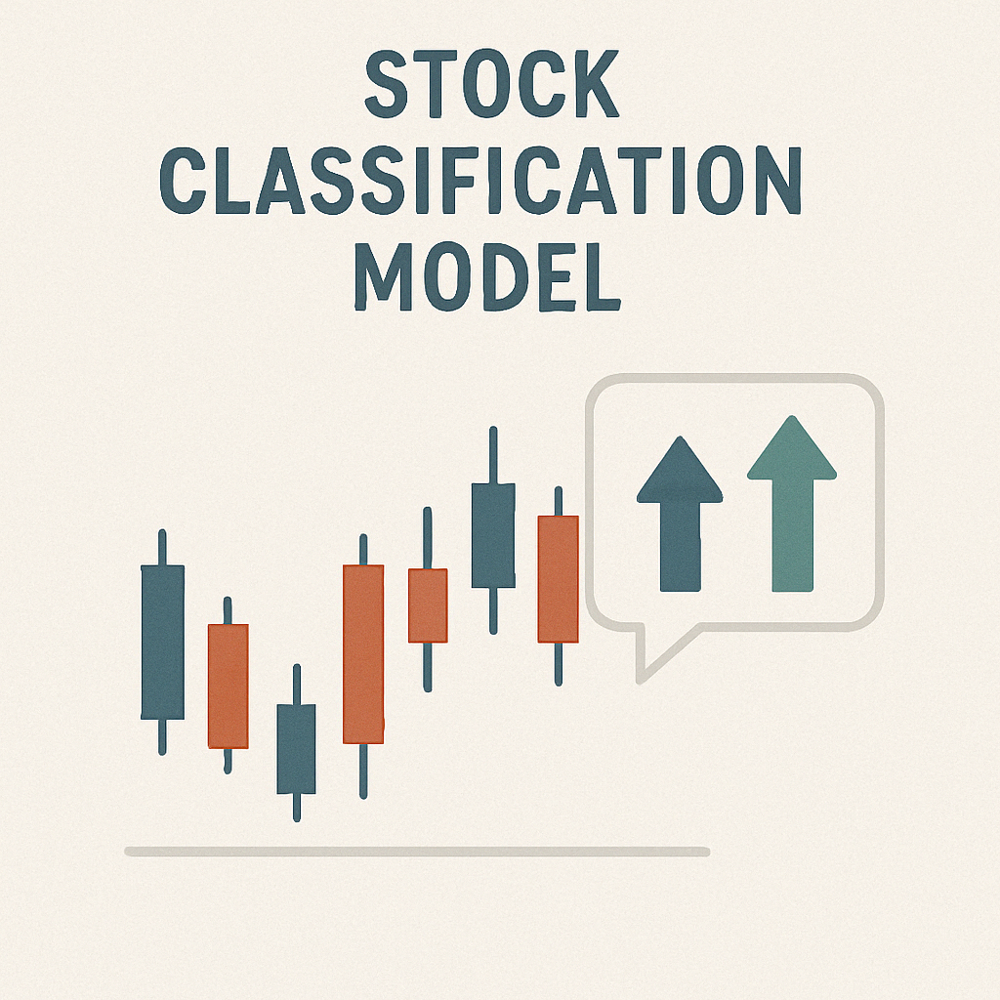

About Me
I am a Computer Engineering student at Ankara Yıldırım Beyazıt University, passionate about artificial intelligence and software development. Throughout my academic journey, I have developed strong skills in programming, machine learning, and data analysis, working with technologies like Python, Java, and C++.
I enjoy building intelligent systems that solve real-world problems and enhance user experiences. Through projects and certifications, I have gained hands-on experience in AI model development, predictive analytics, and software engineering principles.
Driven by curiosity, innovation, and continuous learning, I aspire to contribute to the future of technology by creating smart, efficient, and meaningful solutions.
Projects

Battle Ship
CENG-305 Final Project – November 2024
◦ The project simulates a ship war game where two processes take turns attacking each other and trying to hit each other’s ships.
◦ The project is written using the C language and uses the IPC (Inter-Process Communication) mechanism pipe to provide data exchange between processes.
◦ A team of 4 worked on the design and implementation of the application.

Path-Blocker Game
CENG-317 Final Project – November 2024
◦ The main purpose of the game is to reach the goal without getting into dead ends on the game map and by finding the shortest path.
◦ The project was written in Java and search algorithms were developed to find the shortest paths.
◦ A team of 4 worked to design and implement the project.

Checkers Game
CENG-201 Final Project
◦ The project is a classic checker game.
◦ The project was developed in C++ and the SFML library was used for the graphical interface.

Housing Price Prediction
Regression Analysis Assignment – December 2024 / February 2025
◦ Developed a regression model to predict California housing prices using Python, PySpark, and Spark ML.
◦ Applied data preprocessing, feature engineering, and model evaluation techniques.

Stock Classification Model
Machine Learning and Financial Analysis – January 2025
◦ Built a model to classify stocks based on their sectors using XGBoost, CatBoost, and Gradient Boosting.
◦ Implemented data extraction with yfinance, feature extraction with tsfresh, and data processing with scikit-learn.
Experience
Milli Teknoloji Akademisi – Ministry of Industry and Technology
Artificial Intelligence Specialization Program – November 2024 – Present
◦ Successfully completed the foundational training of the Artificial Intelligence Specialization Program and am actively continuing the specialization phase.
◦ Worked with libraries such as XGBoost, scikit-learn, tsfresh, and yfinance for machine learning models, data engineering, and data analysis.
◦ Gained knowledge of PostgreSQL database integration.